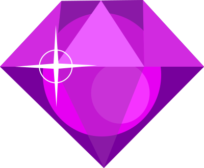
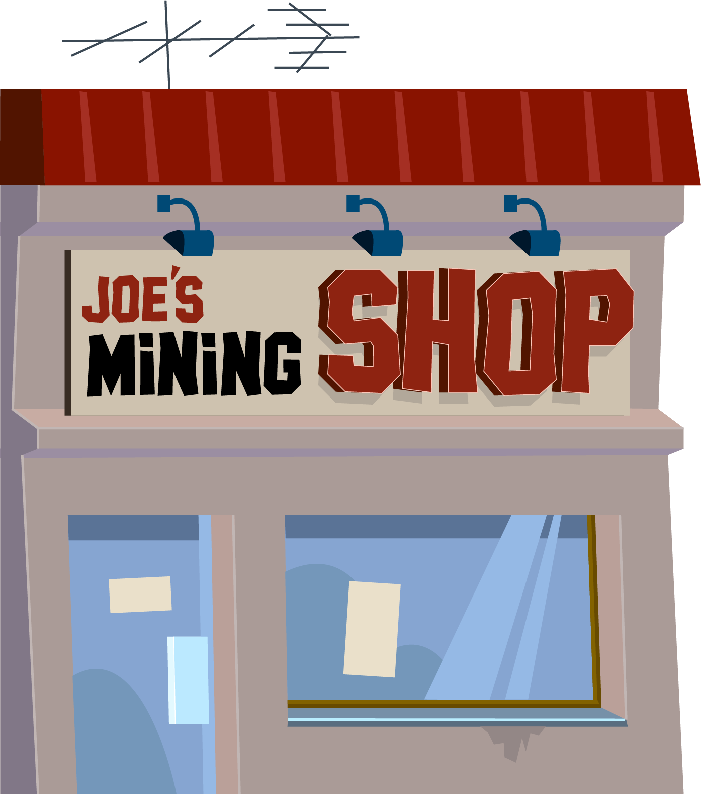
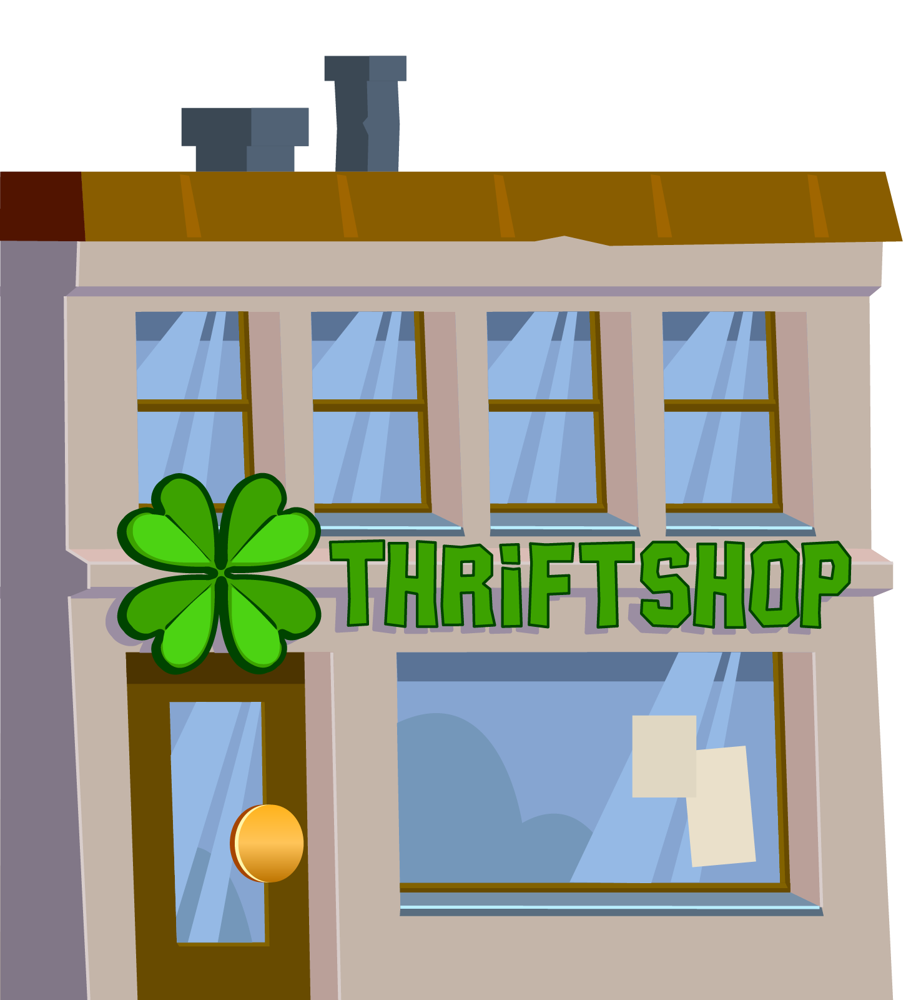
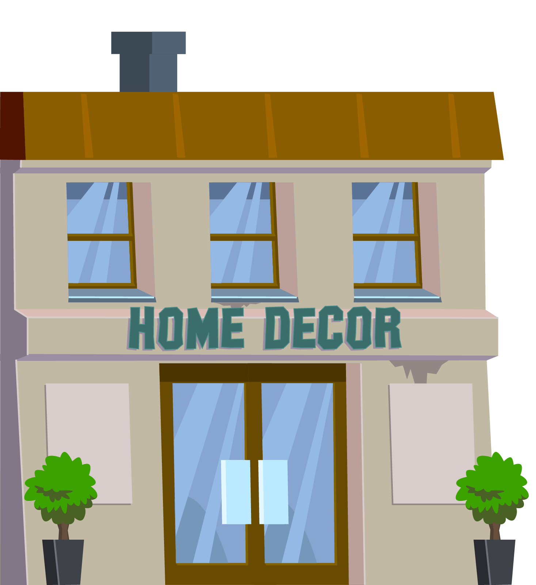
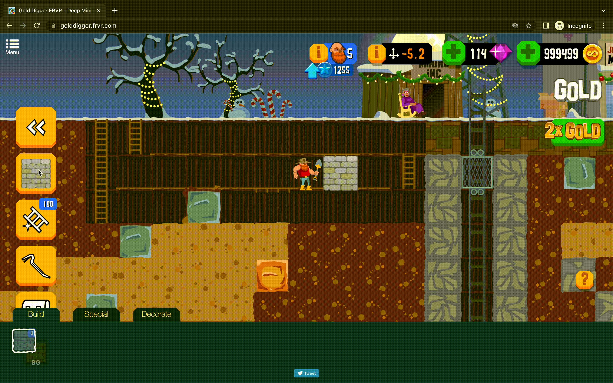
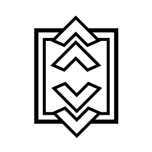
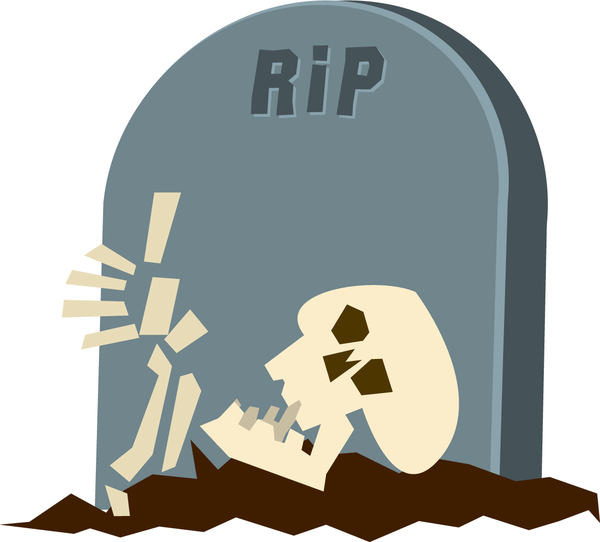

Gold Digger
Goal & Purpose
Explore and dig to reach new depths while leveling your character and acquiring new talents and tools along the journey.
How to Play
On mobile, use your finger to direct the miner in the direction in which you want to dig
On the computer use the directional arrows on the keyboard or click and maintain the mouse pressed to move the miner.

Where can I play Gold Digger?
Gold Digger can be played on the FRVR website and Facebook. On mobile, you can play at Google Play Store, App Store, and Samsung Instant.
Icons
On the left you have, the icons with your Digging tools, Inventory, Quests, and House. On the top, you have your character skill level tab, the coordinates and game version tab, and the gem and coins purchase tab


Level up and Upgrades
As you keep digging, reaching new depths, and discovering new rocks, you will receive blue star tokens, these tokens are used to purchase skill-level upgrades. Purchase enough upgrades and your overall level will increase. You can access the menu by pressing the character button on top.


Gems
You can gather gems by playing and progressing in the game, by watching ads or buy them at the store Regarding gems purchase, it’s possible to buy from the “+” green button near the gem icon with no restrictions, however, not all platforms allow players to buy gems, since they don’t permit transactions.
See below what platforms support in-app purchases:
| Platform | Availability |
|---|---|
| FRVR website | Yes |
| Yes | |
| Google Play Store | Yes |
| Apple Store | Yes |
| Samsung Instant | No |
Bonus
In Gold Digger, you can watch ads to get bonuses or perks that help you progress faster, on the right side will see an icon like the one below

Joe Mining Shop
Buy tools and items to upgrade your miner and enhance your digging.
Thrift Shop
Sell any items you find in the mine in exchange by coins.
Home Decor
Shop to buy furniture for your house.
To have the decor shop you must finish the tutorial and unlock your elevator at the surface, buy the building certified from the shop and activate it to access the new Build menu, and lastly, build 15 walls.
Building
In Gold Digger you can build different kinds of infrastructures in the mine, to do so, please follow these steps:
- Upgrade your Tool Certificates Skill Level until you have unlocked “Hammer Certified” (Hammer icon in the skill list)
- Go to Joe’s mining shop and purchase the hammer.
- Enter the mine and then press the new Hammer Icon in your left side menu
- Tapping any item from the list will allow you to build in the tile you are currently occupying, without any cost.
- Tap on the active construction icon again to deactivate it and then the back arrow to exit construction mode.
Decoration
In Gold Digger you can decorate the mine to your liking, to do so, please follow these steps:
- Open your level skills and make sure you have the first skill in the Building category unlocked. (Hammer and ladder icon).
- Go to Joe’s mining shop, scroll down to the Engineer category and buy the construction upgrade which has the same icon.
- You should now have a new option in the yellow side menu with this icon, tap it to open the construction menu, at the bottom you will have 3 tabs, click on the decorate tab.
- Now simply tap on the decoration when in front of the desired space and it will place the item.
- If you wish to pick items back up, stand in front of them and access this same menu. Then press the put-back into the bag icon.
House
You can build your house by pressing the Hammer in the yellow side menu which should open your construction menu. As you dig and mine ore you will get walls, which you can place on mined tiles and construct your house as you wanted it to be.
House Items
To use house items, you have to purchase them from the store and then they will appear in your decorations tab.
In the mine enter the construction menu (icon with a hammer and ladder) and select the “decoration” tab, then just click on the item and it will be placed into the tile you are standing on.
Crowbar
The Crowbar is the feature that allows the player to build, such as walls, ladders, and decorations. It’s also used to remove any structures you have placed as you walk over them. If you wish to remove a structure you have created, simply enable the crowbar and walk into it and it should be removed.
Special Ores
As you collect star blue tokens you can unlock skills that make your progression in the game more effective. One of the upgrades in the Machinery tab, in your skill level menu, is the special ore license, which will allow you to mine special ore, which will slowly accumulate coins whilst you play.
Once you unlock this skill, go back to these ores and you’ll see a pop-up asking you to spend gems to start extracting.


Conveyer Belt
The Conveyer Belt allows you to transport rocks in the mine. When you set it up, you can choose the direction it will move in, for that, set up a line and push a rock onto them and they’ll move the rock along the line until it simply drops off at the end.


Rock Transformer
The Rock Transformer is a skill available in your skill menu, once unlocked it can be purchased from the shop. It modifies the rocks from one type to another, can be placed anywhere, and has no initial type.
The first rock to pass through it will define the type of rock that it transforms into, and any other rock that passes will change into that type of rock.
However, the type of rock can be reset by kicking the Transformer and it dies after 100 uses. Also, the rocks of the same type as the Transformer, do not count as a transformation.
For example, at certain parts of the mine, you will find giant clusters of grey rocks, if you kick them an explosion will not be triggered, to destroy these rocks you will need a rock transformer.
To use, you’ll need to place down the rock transformer and push the rocks so that they fall through it and once they fall through they are normal explosive rocks.
TIP: The Conveyer Belt and the Rock Transformer can be used in conjunction, for you to strategically get all of your clusters through the rock transformers.
Elevator
Allows you to travel from the surface to the mine and back faster than walking.
Ladders
To acquire ladders please follow these steps:
- Upgrade your Tool Certificates Skill Level until you have unlocked “Hammer Certified” (This is the Hammer icon in this skill list)
- Go to Joe’s mining shop and purchase the hammer.
- Enter the mines and then press the new Hammer Icon in your left side menu. Tap the ladder icon and see that the icon’s background turns green.
- Walk around the mine and you will build a ladder/walk path where you go without any cost.
- Tap on the ladder icon again and then the back arrow to exit ladder construction mode.
Alternatively, you can also find Ladder Orbs underground, which once used, will spawn 50 ladders beneath you.
In regards to the ladders, the wooden ladders will now break after being traversed 10 times while the steel ladders will never break. If you wish to remove steel ladders you can open your construction menu and select the crowbar. With this active, if you walk over a ladder it will remove the ladder and place it as a dropped item for you to pick up.
Pick up placed chests
The difference is that when placing a chest you’re making it a decoration on the map, to pick it up follow these steps:
- Unlock the first skill in the Building section of your skill menu. This unlocks Building mode and will add a new tab to your side menu.
- Tap on the newly unlocked Build tab which will show a new menu at the bottom of the screen with the tabs “Build”, “Special” and “Decorate”.
- Go to the Decorate tab and you should see an icon with an arrow pointing into a backpack. This is the pickup button.
- Stand on top of the placed chest and prompt this icon. You will pick up the placed chest and put it back into your inventory.
Tombstone
When you have the 4th upgrade for the Machinery skill path you will be able to purchase a Sonar from the store. This will show an on-screen alert signaling where your tombstone is allowing you to retrieve your items back.
Grandma/Oracle?
The Grandma will give you quests to complete, stand next to her and accept the quest. Completing these quests will get you rewards.


Enter Code
To activate a code, prompt the side menu and click the tab called Code, enter the code to receive your items.